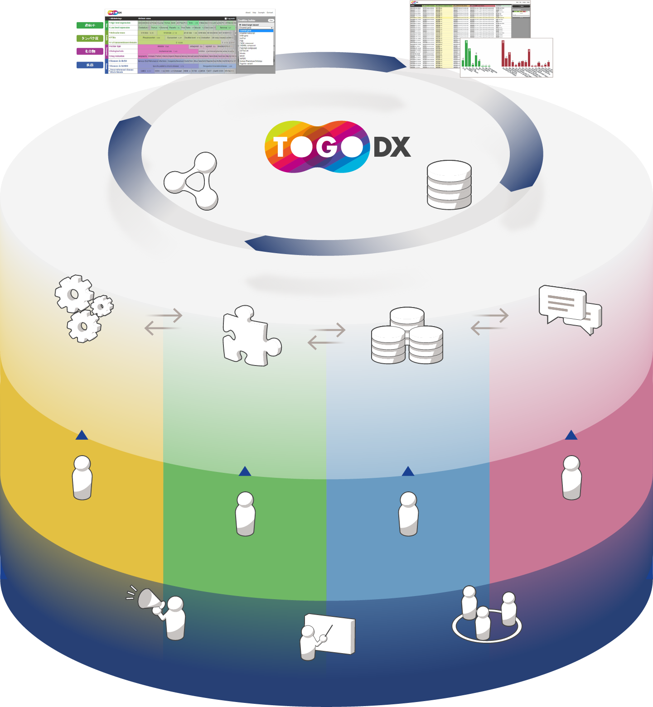

We are developing basic technologies and application programs to integrate and
maintain database in the life science field and to enhance usability for database users. We also support data
producers for incorporating their data in the integrated database framework and build standards for the data
integration in collaboration with the bioinformatics and database research institutes all over the world. Most
of our products and activities are open to public though this web site.

Exploration
Analysis &
Knowledge Discovery
Standardization & Integration
Classification & Visualization
by Attributes
Togo Data eXplorer
Top-down View &
Data Acquisition
Integrated RDF knowledge graph
Data Sources
Application
User Interface Development
for the Integrated Database
Middleware
Efficient Access and Maintenance
for the Integrated Database
Integration
Basic Technology Development
for Database Integration
User Interface Development for the Integrated Database
We are developing web services and contents to deliver the value of the integrated database so that the
researchers can
utilize it effectively. The services include integrated search interface for genome and expression data
and query
interface by natural languages. We are also develop tools for applying the services to applications such
as medical
research and genome editing.
{% for section in site.data.research_modal.application %}
Efficient Access and Maintenance for the Integrated Database
We are conducting research and development for database integration based on semantic web technology and
for the
difficulty in database integration caused by dispersed databases. We are also developing new methods to
handle RDFized
data efficiently as well as utilizing currently available up-to-date technologies, and supporting users
for stable
operation of databases from the database integration project.
{% for section in site.data.research_modal.middleware %}
Basic Technology Development for Database Integration
We promote database integration using semantic web technology. Applying the Resource Description
Framework (RDF), which
is a framework for describing resources on the semantic web, extends the usefulness of information in
individual data.
Annotation for the relationship between data by experts and knowledge from literature is important for
database
integration focusing on semantics. We support RDFization of various data/information and develop basic
technologies for
database integration.
{% for section in site.data.research_modal.database %}
By connecting databases with linkages in various aspects the value of each database can be enriched. To
realize such a
connection, we support database integration based on the RDFization technology developed by us. We also
work together
with intra- and international research organizations who are operating various databases, thus we
contribute in
developing international guidelines and principles for database integration using semantic web technology.
{% for section in site.data.research_modal.support %}
{% if sublist.description_en != nil %}
{{sublist.description_en}}{% endif %}
{% endfor %}